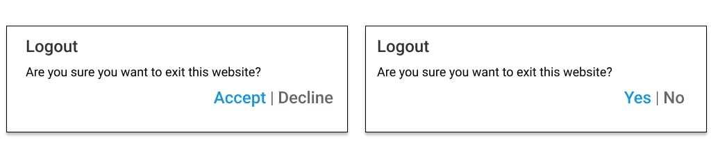

Understandability
It includes language, images, icons and sound.
The language needs to be user-friendly, images and icons intuitive and the sound can't irritate our users!

By Agata Piekarczyk
Examples of popular icons
home
search
settings
shopping_cart
mail_outline
delete_outline
autorenew
done_outline
thumb_up
visibility_off
zoom_in
zoom_out
location_on
rss_feed
mic_off
videocam_off
volume_up
add
Tips
- Don't assume anything
- Think as your users
- Foresee questions, and answer them
- Think about context